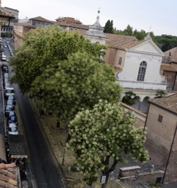

Summer Book Lists

Cloudy summer day in Rome out my window. The green seeds falling to the sidewalk are wonderful to walk through in twilight. And yes, that’s the Colosseum way in the background.
To dream of an interminable summer is probably some vestige from childhood. Summers were long grass, alfalfa stains, the rain of irrigation, thunder storms, hay bales, billows of dust off the road, the smell of the dust and alfalfa and mouldy hay bales. Summers were the long pink light that would stretch across the fields and penetrate the cornstalks or the bean plants or whatever was planted in the west-facing field and dye our house orange for the instant before sunset. Summers had clarity and a tangible quality. Summers were the freedom to wander at all hours through the fields, to bicycle through town in any direction. They were open, free days. And even then I holed up with a book and read.
Summers in my mind are near perfection and are now best enjoyed near water with a book. I have been trying to go to the beach as often as I can during the weekends, water-logging my pages with saline. And this coming August has even more beach days in store. I can’t help it, the excitement of being able to get to books that have sat too long unread on my shelf is justified by the pleasure of reading them on a Tuscan Island while soaking up the sun, after going for a swim. And so to help me narrow down exactly what I want to read over the next month, I’m writing these lists.
Books I’ve Already Read this Summer
Accustomed Earth and The Namesake by Jhumpa Lahiri: Early summer started with a Jhumpa Lahiri obsession. And left just enough breathing room until September when her next novel, The Lowland, comes out.
The Picture of Dorian Gray by Oscar Wilde: For some reason, classics sit better with sand for me, or maybe I threw this book into my beach bag because it’s so small. Though floating in the sea and thinking about the transformation of Dorian Gray was an odd sensation that shouldn’t be passed up.
Dear Life by Alice Munro: I only finished reading this collection of Munro’s latest short stories this summer, though I read most of them earlier in the year on a train to Perugia. And like always, they were stunning. And despite my brain being so full of characters and fictional landscapes and plots, certain scenes from this book remain vivid to me.
All That Is by James Salter: This one never made it to the beach and perhaps the better for its white cover pages. I had never read James Salter before, and starting with this one, his latest, means I probably won’t read his others. Though I did admire the quick but lucid prose and his characters who sometimes were written in only a few paragraphs and then never seen again.
Books to Read from My Shelves
The Prime of Miss Jean Brodie by Muriel Spark: I bought this in Amsterdam and am looking forward to digging into my first Muriel Spark.
The End of Manners by Francesca Marciano: In June I saw Francesca Marciano read from one of her short stories not yet published. At the reading, the only book of hers to buy was this one, set in Afghanistan. Although it’s neither a classic nor light beach reading, I always like to discover a new author’s voice, especially when their actual voice is as charming as Marciano’s is.
Why Be Normal When You Can Be Happy? by Jeanette Winterson: I am considering Winterson’s autobiography because the cover photo is of the author as a young toddler on a beach.
Grab Bag
- Travels with Me and Another by Martha Gellhorn
- IQ84 by Haruki Murakami: Would have started reading this already if it wasn’t so big as to take up my whole beach bag.
As always, too many books, too little time.
· · · · · · · · · · · · · · · · · · · ·